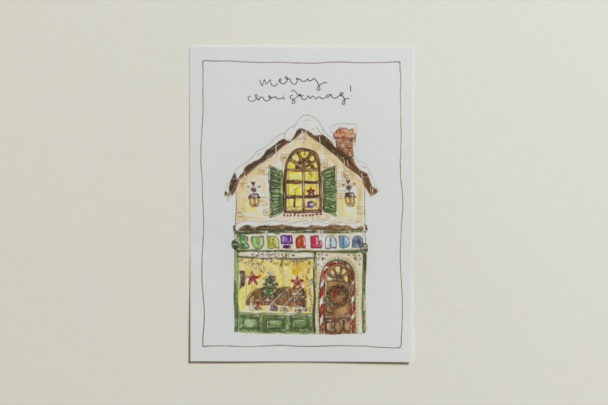
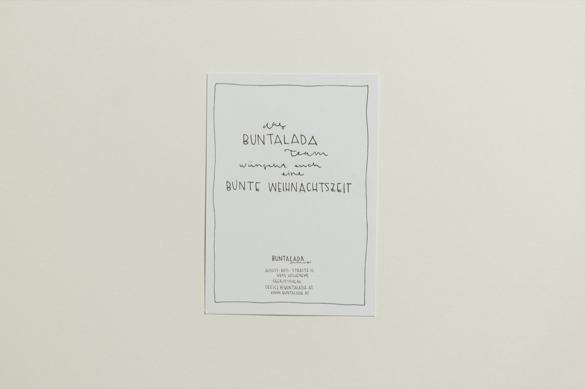
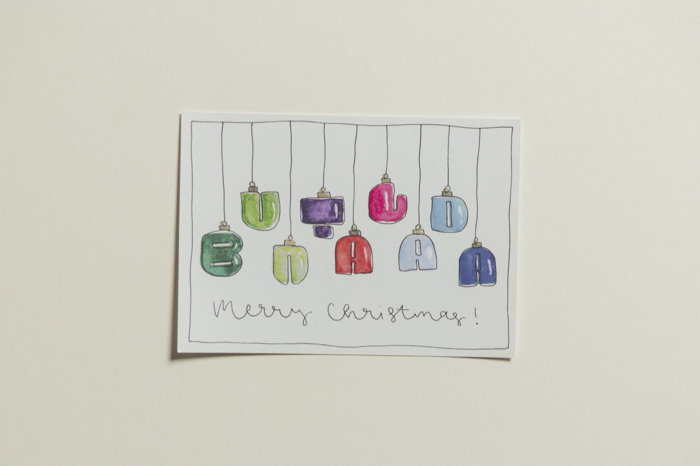
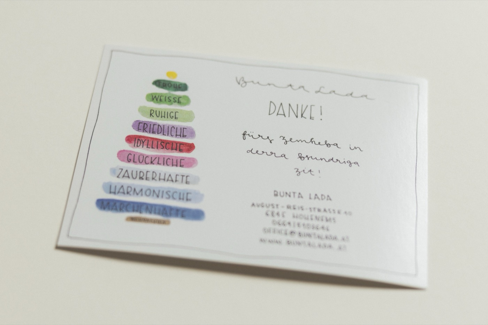
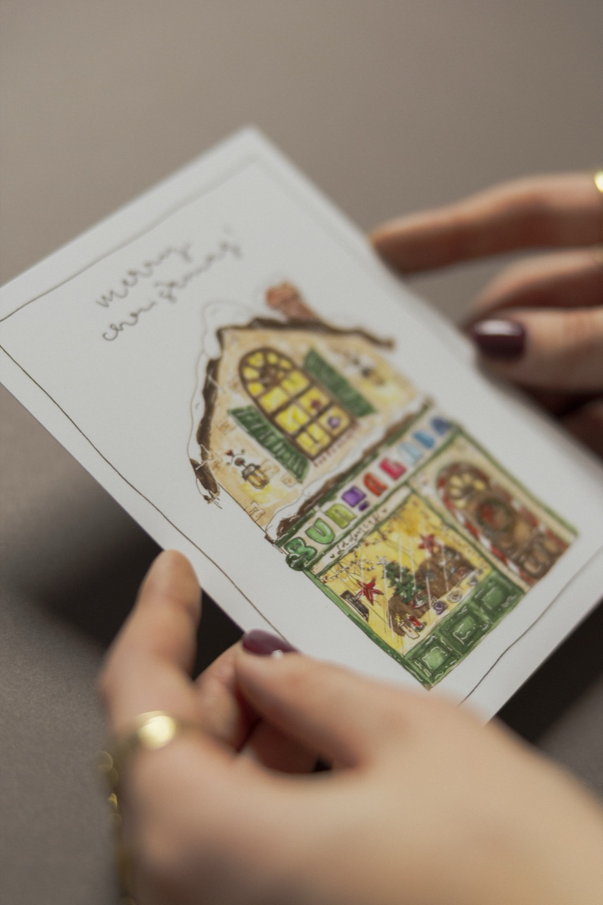
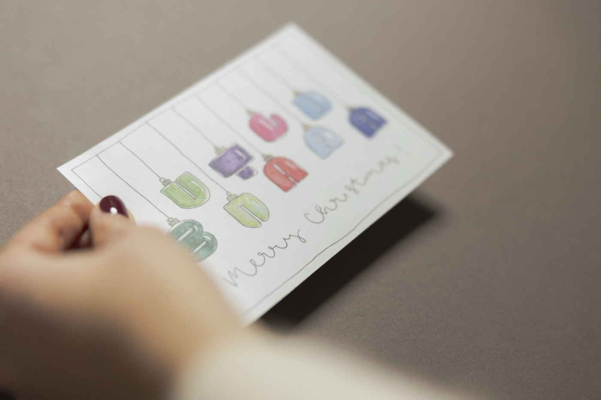

Für das Ladencafé Buntalada in Hohenems (Vorarlberg) gestaltete ich eine exklusive Weihnachtskarten-Edition. Ziel war es, den charmanten Charakter des Ortes in einer saisonalen Grußbotschaft einzufangen. Es entstanden zwei handgefertigte Motive in einer Mischtechnik aus Fineliner und Aquarell. Das erste Motiv spielt typografisch mit dem Fest und inszeniert Buchstaben als herabhängenden Christbaumschmuck. Das zweite Motiv rückt die Identität des Ladens selbst in den Fokus und interpretiert das Gebäude als einladendes, weihnachtliches Häuschen. Die Arbeit verbindet detailreiche Zeichnung mit der atmosphärischen Leichtigkeit von Aquarellfarben.





